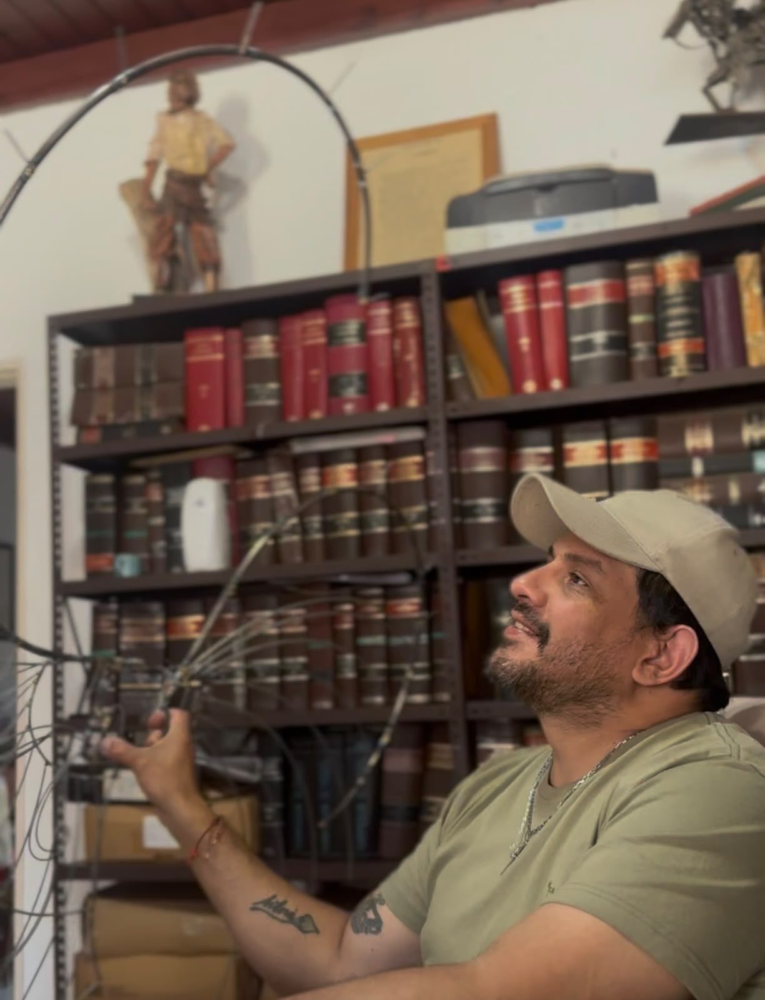

Realizador y Coordinador General de Vestuarios
Artesano Diplomado en Carnaval
Profesor de Historia (IFD N°1)
1 de 10
¿Con cuánto tiempo de anticipación hay que encargar los trajes?
Lo ideal es contactarnos con un mínimo de 3 a 5 meses de anticipación para planificar los bocetos, importar los materiales adecuados y garantizar las pruebas de calce necesarias.
¿Trabajás con comparsas de otras provincias o ciudades?
Sí, coordinamos a distancia en todo el país mediante fichas técnicas detalladas y preparamos embalajes especiales de protección para garantizar que las estructuras lleguen intactas.